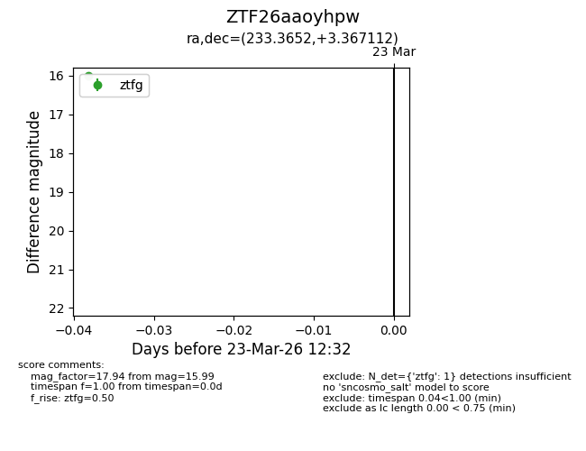
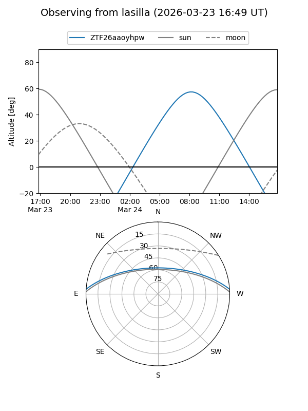
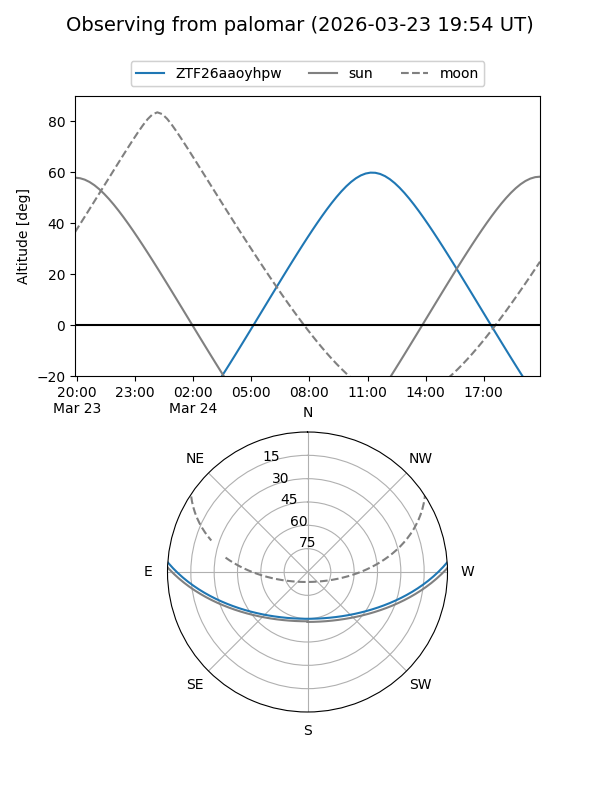

ZTF26aaoyhpw
Target ZTF26aaoyhpw at 2026-03-23 12:34
Aliases and brokers:
FINK: link
Lasair: link
ALeRCE: link
alt names
ZTF26aaoyhpw (ztf,fink_ztf)
Coordinates:
equatorial (ra, dec) = 233.3652,+3.36711
equatorial (HMS+DMS) = 15:33:27.65,+03:22:01.60
galactic (l, b) = (8.5536,+44.61246)
Flags:
Photometry:
last ztfg=15.99
1 ztfg detections
Lightcurve

Visibility


Additional plots